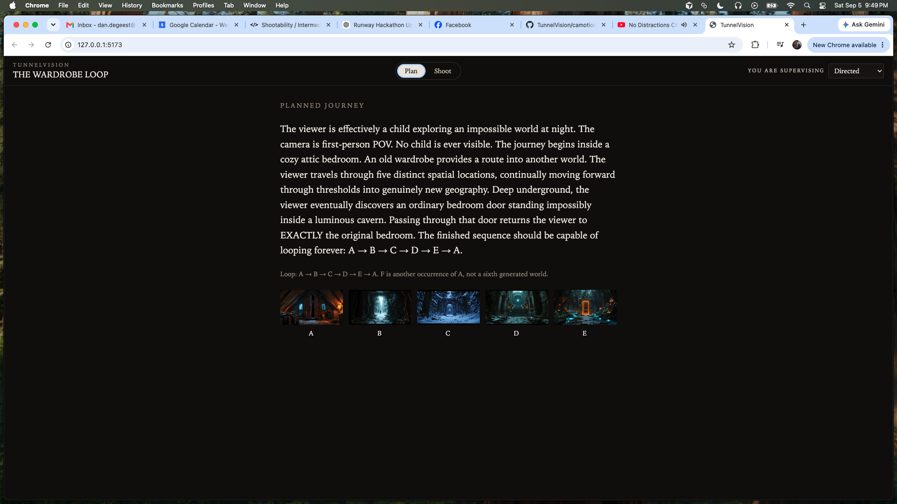
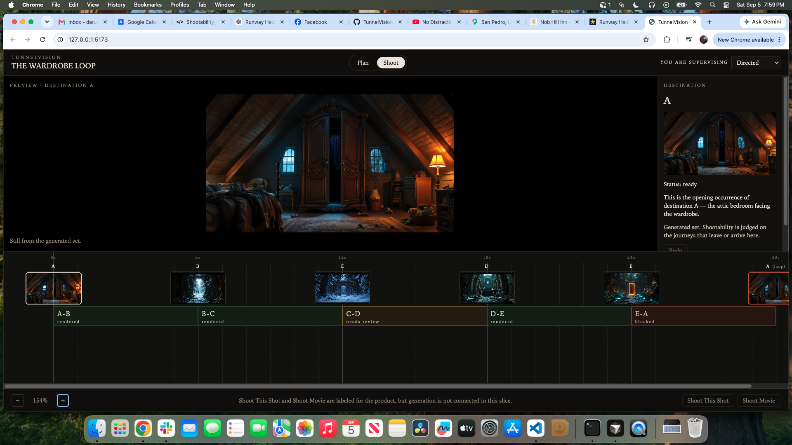

Plan
INTENDED JOURNEYPlan presents the intended journey and its sequence of Destinations without production complexity. Destinations are places — world-state observations. The loop is already present in the plan: A → B → C → D → E → A.
This chapter records the first product UI milestone: the moment those research concepts became a coherent filmmaking product shell. It is not a Camotion experiment. Camotion Phase 1 remains frozen. Product Slice 1 is fixture-driven using the Wardrobe Loop. Generation and orchestration are not yet connected to the product interface.
Plan states the journey, spatial progression, destinations, and loop. Shoot is the filmmaking workspace: those destinations become positions, and the Journey represents camera travel between them. Primary product navigation is Plan | Shoot.
Product Slice 1 separates filmmaking into Plan and Shoot: first define the journey, then produce the movement through it.


Plan presents the intended journey and its sequence of Destinations without production complexity. Destinations are places — world-state observations. The loop is already present in the plan: A → B → C → D → E → A.
Shoot is the production workspace. Two positionally locked lanes sit one above the other: Destinations above, Journey below. Destination centers align exactly to Journey boundaries. Spatial position is primary; time is represented underneath. Journey segments are motion and travel between those places.
The repeated final A is a loop occurrence of Destination A, not a duplicate Destination.
Shootability belongs to the route — the Journey relationship — rather than to either endpoint individually. The blocked E→A leg demonstrates this: E and A remain valid destinations while the traversal between them is not currently shootable.
The fixed 16:9 Preview acts as a filmmaking monitor rather than an editing canvas. The interface is a planning, pre-production, and shooting environment, not a conventional NLE.
Product Slice 1 is fixture-driven using the Wardrobe Loop. Shoot This Shot and Shoot Movie are labeled for the product. Generation and orchestration are not connected to the product interface. Later UI screenshots should mark conceptual product milestones, not routine polish.